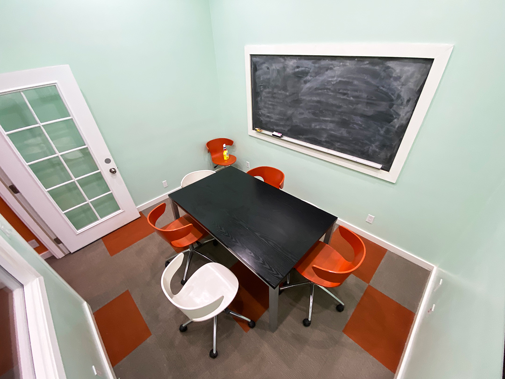
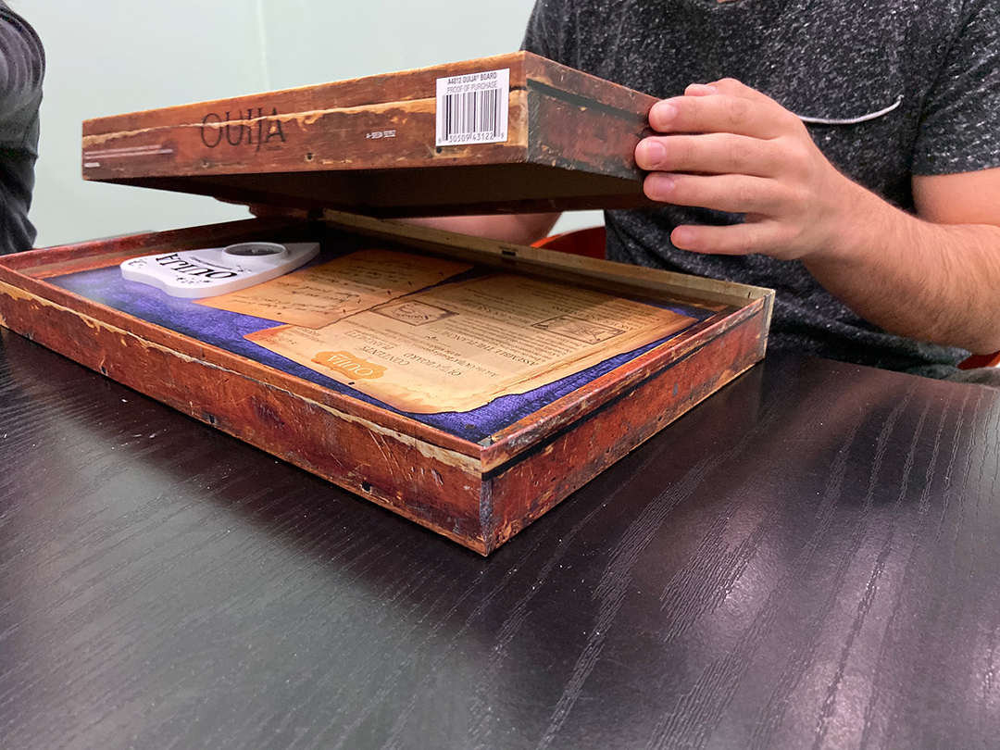
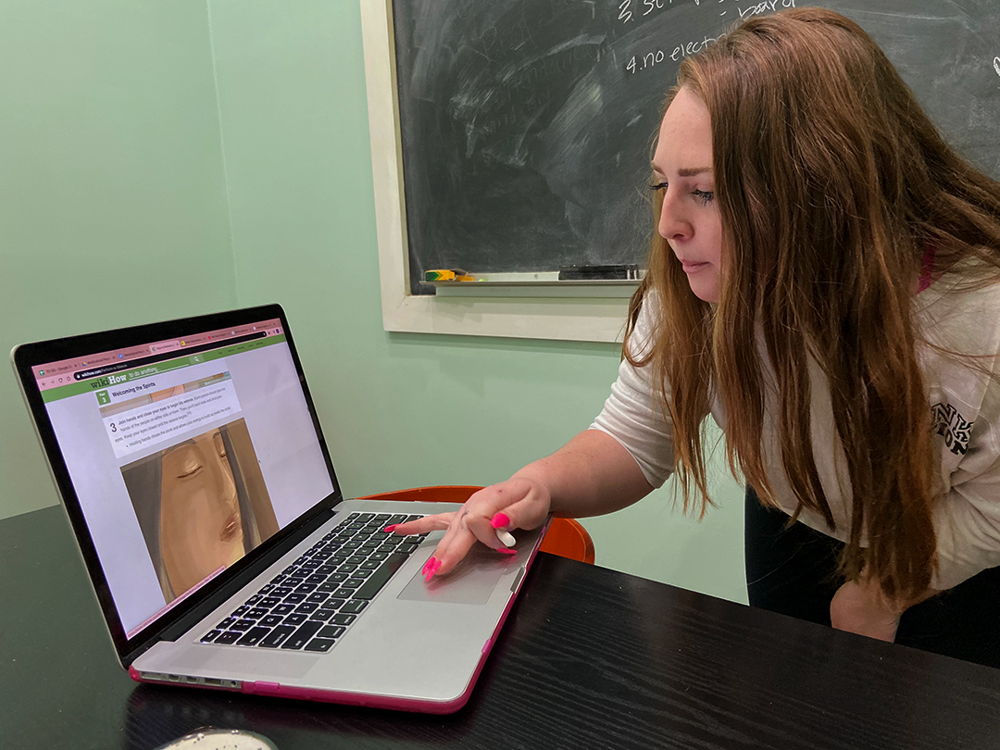
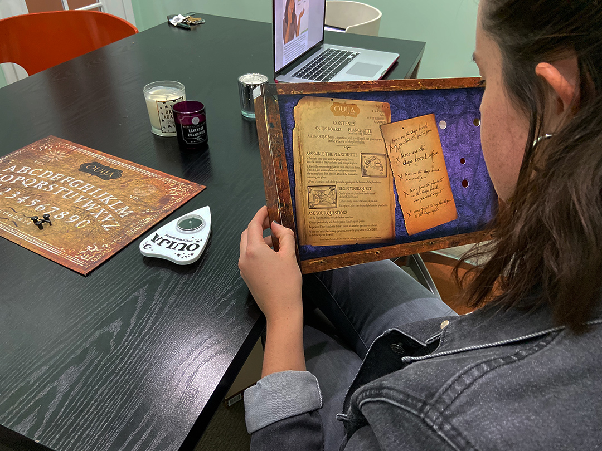
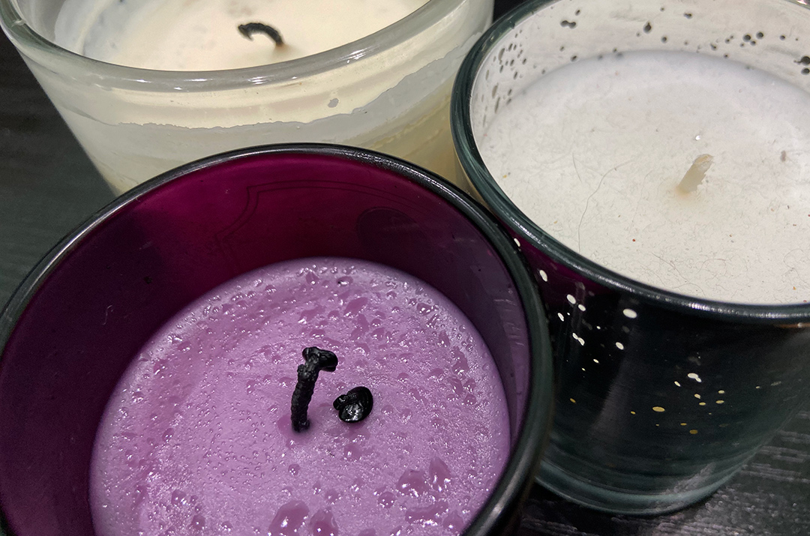
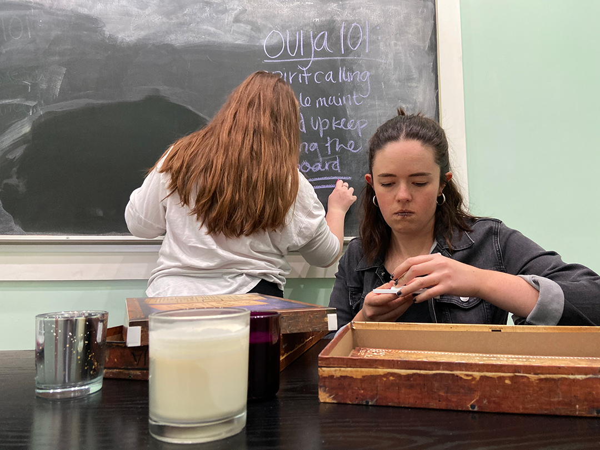
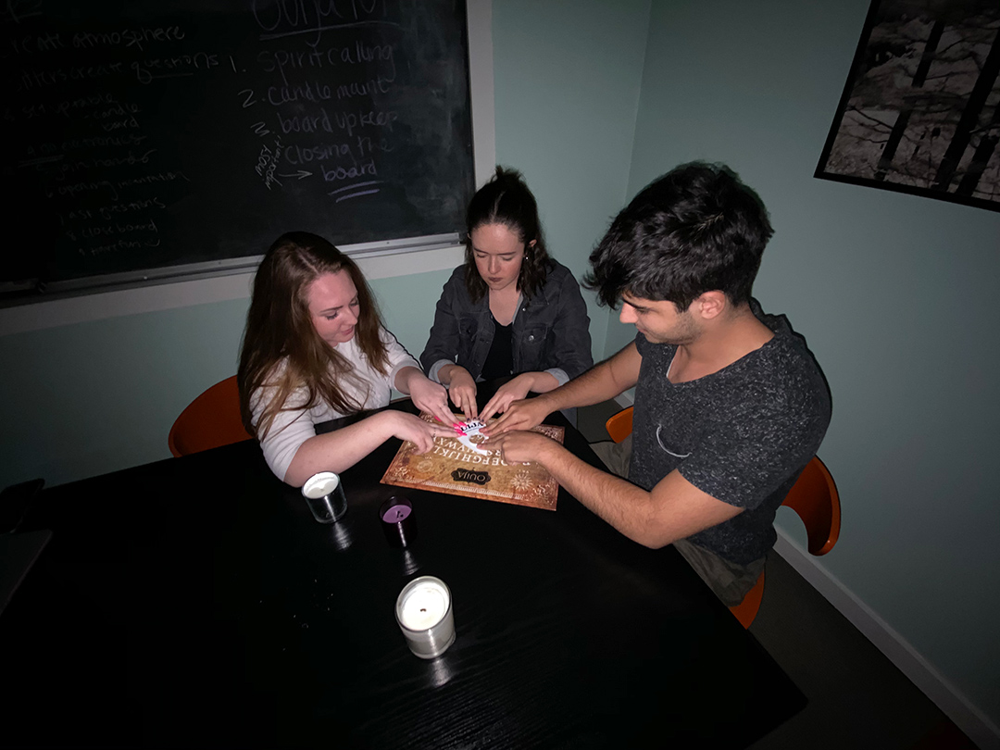
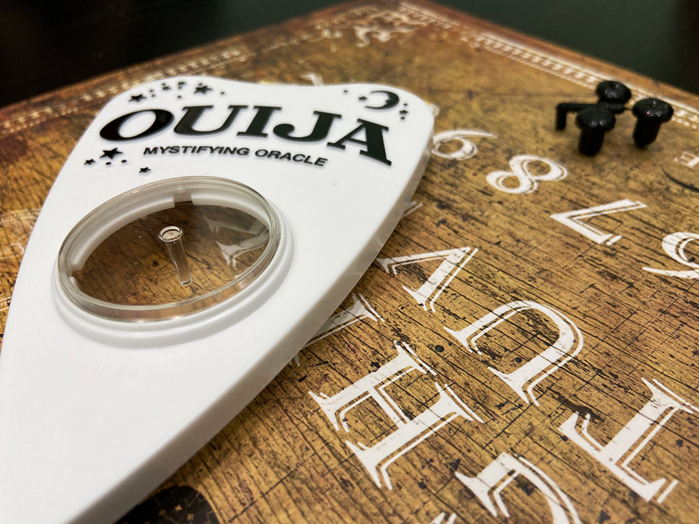
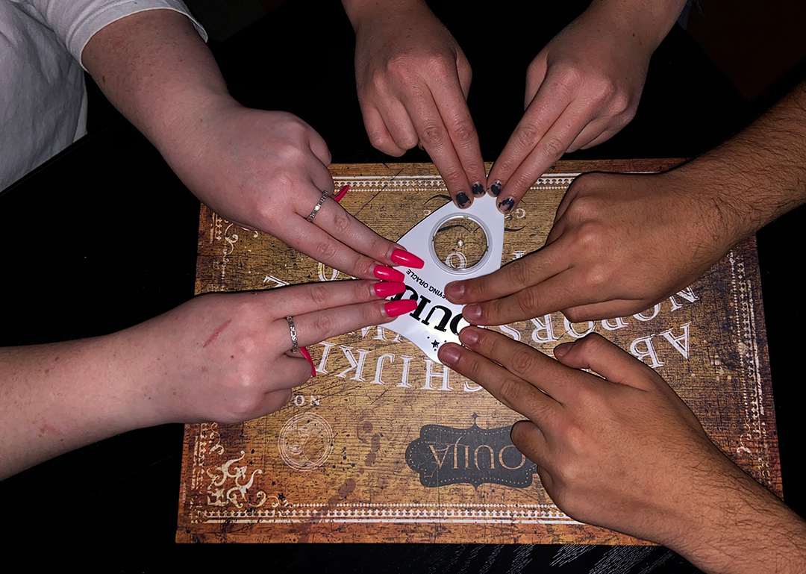
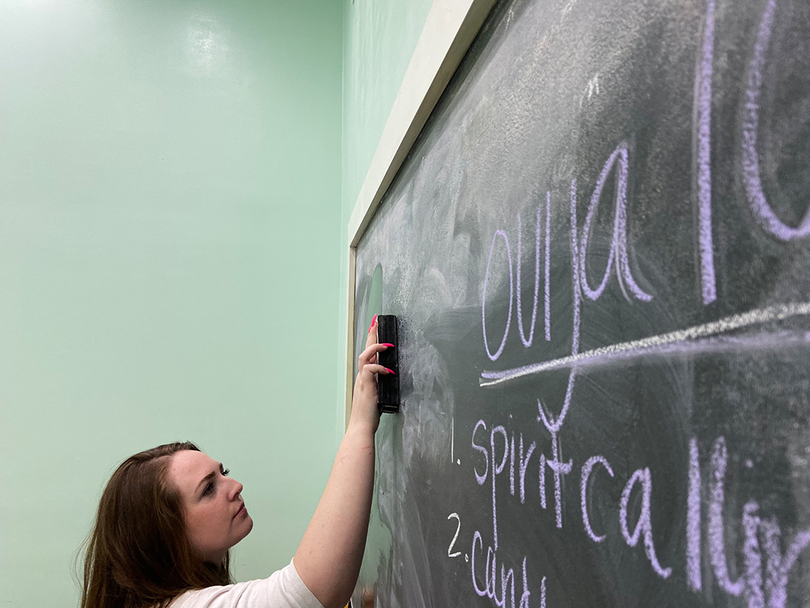

1 / 10

Feb. 8, 2020 | Valencia Apartments, San Luis Obispo | In a quiet study room at the back of the Valencia Apartment clubhouse, three friends spend their Saturday evening getting ready to use a Ouija board, a spiritualist device that is meant to allow people to communicate with the dead.
2 / 10

Ouija boards come in different shapes and sizes but all display the alphabet, the numbers 0-9, and short phrases like “yes,” “no,” and “goodbye.” People in the circle place both their index fingers on the planchette, a small teardrop or heart-shaped object, which moves in response to the questions asked to the spirits.
3 / 10

This method of communication rose in popularity after the American Civil War, when people lost many friends and relatives to battle. Though Ouija boards were used primarily only by mediums during the surgence of spiritualism, in current times it has transformed into a commercial parlor game that regular people use for a number of reasons, including for fun.
4 / 10

“I love this kind of stuff. Just the possibility that I could talk to someone who died! So many people have actually been able to make contact and there’s too much evidence saying it’s real. I’ve always wanted to hold a real seance, with candles, which we can’t light here unfortunately, but this is good enough,” said Luci Simpson, a Cal Poly graduate.
5 / 10

Simpson was able to convince her friends to perform this ritual with her by winning a Super Bowl bet—they don’t share her excitement at the thought of conducting an ouija session.
6 / 10

“I know spirits exist so I’m a little nervous. A few years ago, my mom and I scanned an old photo of my grandma and her sister as kids, and in the online version she was in the background of the house looking like she did when she died. But it wasn’t in the original,” stated Emily Cook, a 4th year Anthropology student. “It was kinda comforting but it was also legit scary.”
7 / 10

UCSC student Sergey Gasparyan, on the other hand, showed up for the simple purpose of proving the game wrong. “There’s no way this is real. I’m not saying I don’t believe in ghosts, but I just don’t see how a cardboard toy made in China would ever be able to communicate with the dead,” he said. “Also I don’t really know anyone that died so if it actually works then that would be cool to see.”
8 / 10

“Hello, spirit. We come in peace and we have some questions. Did you live in Valencia when you died?” Simpson asked the board. In the 15-minute session conducted, the spirit responded yes to living at Valencia, heart in response to why it hadn’t moved on from our world and 80J as the answer to which apartment they lived in (though Valencia apartments are numbered, not lettered).
9 / 10

Despite the vague and partially inaccurate answers the board reflected, all three were surprised the planchette moved at all and accused one another of moving it on purpose. “I bet it didn’t work as well because we couldn’t light the candles in here,” Gasparyan said sarcastically.
10 / 10

“I’m kinda glad it didn’t work. I don’t want to get false hope and pretend that like, they’re actually saying something to me when it could just be coincidental or fake, but I’d be out here thinking I get to talk to my grandma again. I think that would be painful,” said Cook.
❮
❯